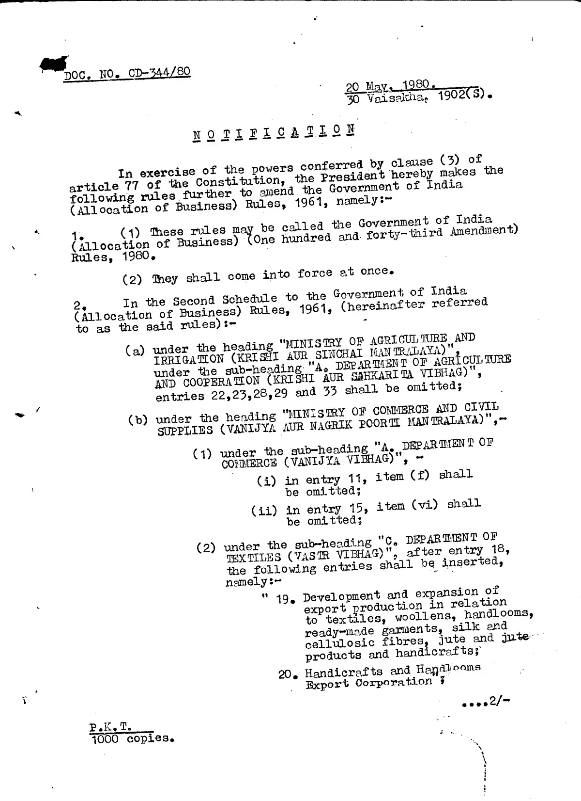
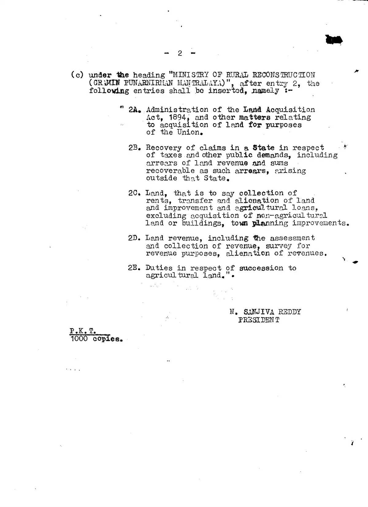

Amendment #143 (S.O. 341(E), 1980)
5 changes: 0 to the First Schedule, 5 to the Second Schedule. 5 applied
What it did to the ministries
- grewMinistry of Rural Reconstruction grows from 12 to 16 subjects change 5 · histories: Rural Development
The order, page by page
Page 1 of 2

1234Schedule 2 › MINISTRY OF AGRICULTURE AND IRRIGATION › DEPARTMENT OF AGRICULTURE AND COOPERATION › entry 29; Schedule 2 › MINISTRY OF AGRICULTURE AND IRRIGATION › DEPARTMENT OF AGRICULTURE AND COOPERATION › entry 29; Schedule 2 › MINISTRY OF AGRICULTURE AND IRRIGATION › DEPARTMENT OF AGRICULTURE AND COOPERATION › entry 29; Schedule 2 › MINISTRY OF AGRICULTURE AND IRRIGATION › DEPARTMENT OF AGRICULTURE AND COOPERATION › entry 29; Schedule 2 › MINISTRY OF AGRICULTURE AND IRRIGATION › DEPARTMENT OF AGRICULTURE AND COOPERATION › entry 33
applied at schedule 2 › ministry MINISTRY OF AGRICULTURE AND IRRIGATION › department A › part III › entry 29 in the Rules after #143
Schedule 2 › MINISTRY OF COMMERCE AND CIVIL SUPPLIES › DEPARTMENT OF COMMERCE › entry 11 › item f
applied at schedule 2 › ministry MINISTRY OF COMMERCE AND CIVIL SUPPLIES › department A › group_heading IV › entry 11 › item f in the Rules after #143
states inferred loose
Schedule 2 › MINISTRY OF COMMERCE AND CIVIL SUPPLIES › DEPARTMENT OF COMMERCE › entry 15 › item vi
applied at schedule 2 › ministry MINISTRY OF COMMERCE AND CIVIL SUPPLIES › department A › group_heading IV › entry 15 › item vi in the Rules after #143
states inferred loose
after Schedule 2 › MINISTRY OF COMMERCE AND CIVIL SUPPLIES › DEPARTMENT OF TEXTILES › entry 18
- 19. Development and expansion of export production in relation to textiles, woollens, handlooms ready-made garments, silk and cellulosic fibres, jute and jute. products and handicrafts%;B
- 20. Handicrafts and Handlooms Export Corporation
applied at schedule 2 › ministry MINISTRY OF COMMERCE AND CIVIL SUPPLIES › department C › entry 19 in the Rules after #143
Page 2 of 2

5after Schedule 2 › MINISTRY OF RURAL RECONSTRUCTION › entry 2
- 1 2A. Administration of the Land Acquisition Act, 1894, and other matters relating to acquisition of land for purposes of the Union.
- 2B. Recovery of claims in a State in respect of taxes and other public demands, including arrears of land revenue and sums recoverable as such arrears, arising outside that State.
- 20. Land, that is to say collection of rents, transfer and alienation of land and improvement and agricultural loans excluding acquisition of non-agricultural land or buildings, town planning improvements.
- 2D. Land revenue, including the assessment and collection of revenue, survey for revenue purposes, alienation of revenues.
- 2E. Duties in respect of succession to agricultural land. 11
applied at schedule 2 › ministry MINISTRY OF RURAL RECONSTRUCTION › entry 2B in the Rules after #143
How this document was read
Changes placed by an inference rule
| Change | Rule | Status | What |
|---|---|---|---|
| 2 | loose | accepted | change 2: department DEPARTMENT OF COMMERCE taken for department DEPARTMENT OF COMMERCF, named loosely |
| 3 | loose | accepted | change 3: department DEPARTMENT OF COMMERCE taken for department DEPARTMENT OF COMMERCF, named loosely |
From the Government of India (Allocation of Business) Rules, 1961 and their amendments, as published by the Cabinet Secretariat (cabsec.gov.in), read by orgpedia. The readings of the older scanned gazettes have known gaps.